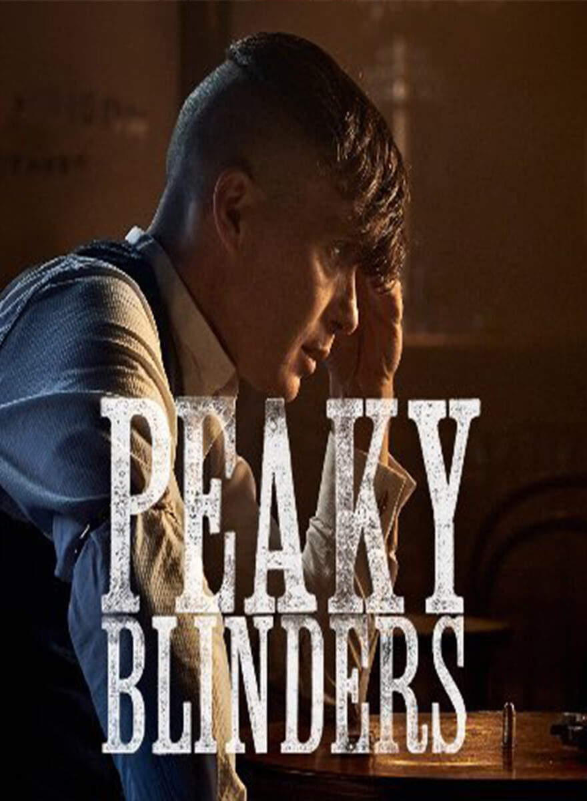
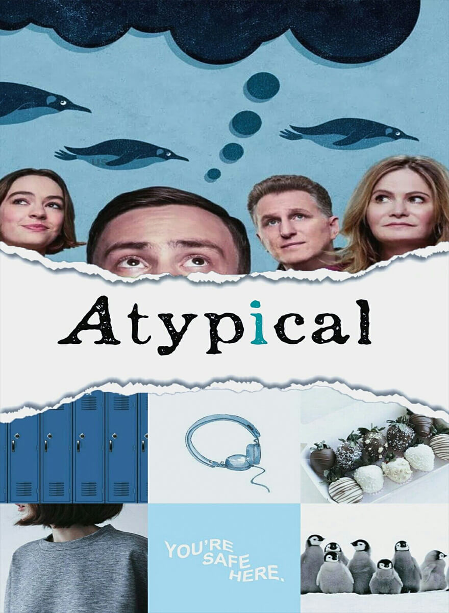
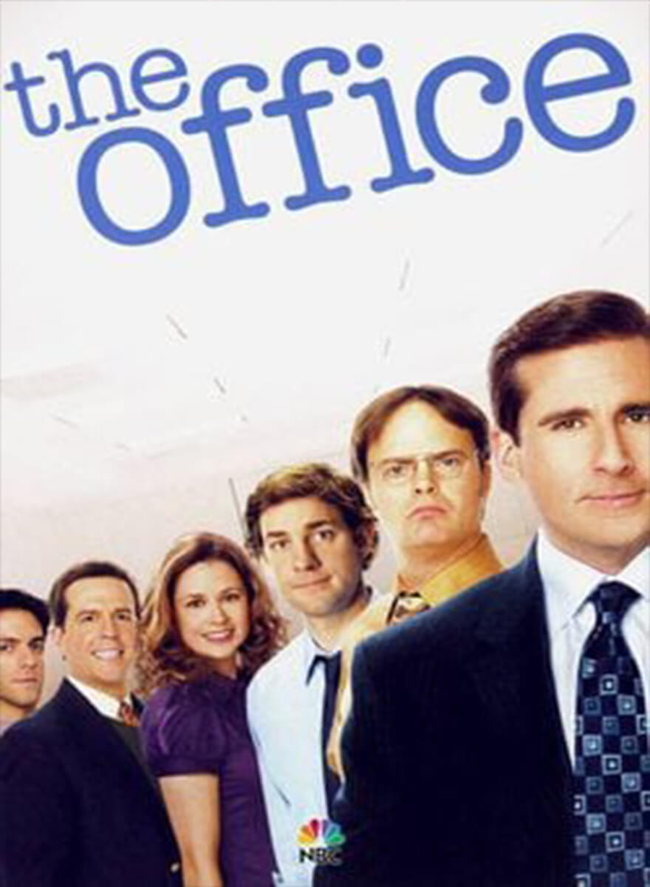
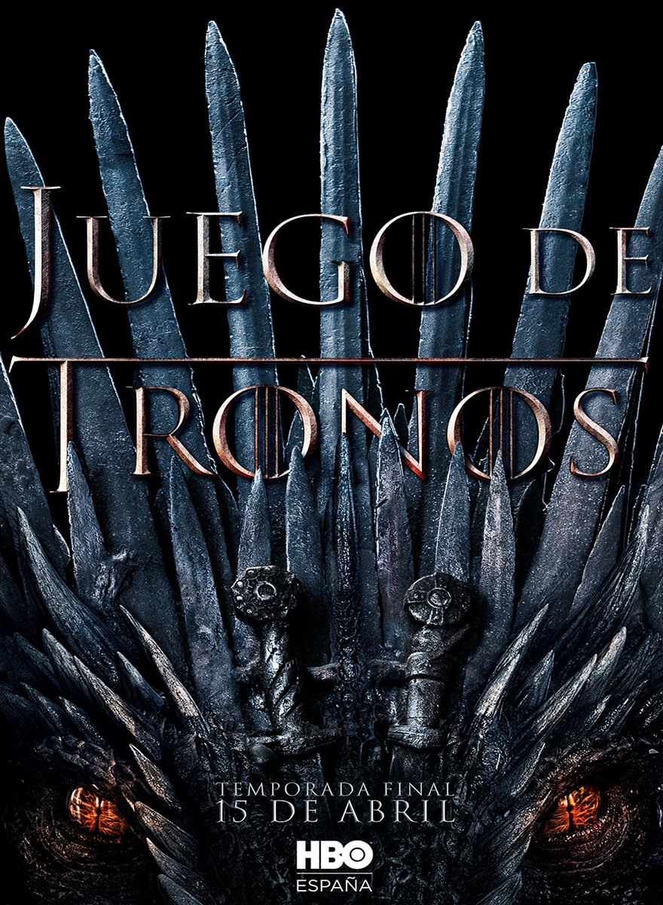

2013 ‧ Comedia de situación ‧ 5 temporadas
calificación:4.9
Después de haber estado desaparecido durante casi 20 años, Rick Sánchez llega de imprevisto a la puerta de la casa de su hija Beth y se va a vivir con ella y su familia utilizando el garaje como su laboratorio personal.
2013 ‧ Drama ‧ 5 temporadas
calificación:4.9
Gran Bretaña vive la posguerra. Los soldados regresan, se acuñan nuevas revoluciones y nacen bandas criminales en una nación agitada. En Birmingham, una pandilla de gánsters callejeros asciende hasta convertirse en los reyes de la clase obrera.

2017 ‧ Comedia dramática ‧ 2 temporadas
calificación:4.8
James, un joven psicópata, y Alyssa, una adolescente rebelde, se embarcan en un viaje por carretera en busca del padre de ella. Sin embargo, la aventura no ha hecho más que empezar.
2017 ‧ Comedia dramática ‧ 4 temporadas
calificación:4.9
Un adolescente con autismo está listo para enamorarse. Para comenzar a salir y encontrar el amor, necesita ser más independiente.

2012 ‧ Infantil ‧ 2 temporadas
calificación:4.9
El tío Stan invita a los gemelos Dipper y Mabel Pines a pasar el verano en el misterioso pueblo de Gravity Falls, Oregón. Los niños lo ayudan en la Cabaña del Misterio, la trampa turística que posee. Los gemelos tratan de adaptarse al entorno diferente, pero sienten que hay algo extraño en Gravity Falls y comienzan a descubrir sus secretos. Cuando Dipper descubre un diario críptico que ofrece el conocimiento de los misterios de la ciudad, él y Mabel lo usan para vencer al mal, y luchan para descubrir los inminentes misterios que los rodean.

1989 ‧ Acción ‧ 9 temporadas
calificación:4.8
Un valiente joven con poderes increíbles se aventura hacia un viaje místico en tierras exóticas llenas de guerreros nobles, princesas hermosas, monstruos mutantes, extraterrestres y crueles ejércitos.

2016 ‧ Ciencia ficción ‧ 3 temporadas
calificación:4.6
Cuando un niño desaparece, sus amigos, la familia y la policía se ven envueltos en una serie de eventos misteriosos al tratar de encontrarlo. Su ausencia coincide con el avistamiento de una criatura terrorífica y la aparición de una extraña niña.

2008 ‧ Drama ‧ 5 temporadas
calificación:5
El profesor calmado de química de una secundaria, Walter White cree que su vida no puede ser peor. Su salario apenas le alcanza para sostener a su familia, una situación que no mejora cuando su esposa da a luz y su hijo adolescente sufre de parálisis cerebral, pero Walter queda anonadado cuando se entera que tiene un cáncer terminal. Al concluir que su enfermedad iba a arruinar financieramente a su familia, él toma una decisión desesperada con el fin de ganar más dinero durante el tiempo que le queda y transforma un viejo vehículo de recreación en un laboratorio de matanfetaminas sobre ruedas.
calificación:4.8
2005 ‧ Comedia de situación ‧ 9 temporadas
La adaptación de Estados Unidos, localizada en Scranton, Pensilvania., es la de una compañía papelera de alguna forma un poco más dinámica que la versión original Británica, aunque los personajes son esencialmente los mismos, desde Michael Scott, el peor jefe de todos hasta un hombre cualquiera Jim, enamorado de la recepcionista Pam a quien él le coquetea cuando no está preocupado por atormentar a su compañero Dwight, un hombre muy excitable y adulón.
2011 ‧ Drama ‧ 8 temporadas
calificación:4.8
En el continente de Poniente se produjo una guerra civil devastadora que expulsó del trono a los Targaryen y convirtió a Robert Baratheon (Mark Addy) en rey de los Siete Reinos. Tras la muerte de Baratheon, varias familias nobles luchan por el poder del Trono De Hierro del territorio.